Print every page at 100% / "Actual size" on the paper size shown. Each sheet has a few big photos and 3 or 4 short points. Those points are what you explain to visitors. The grey code in the top right corner says where each sheet goes.
Page
Size
Where
Sheet: the point to explain
2
A4 L
for you
How the three boards are laid out. Left, middle and right, drawn to scale.
Board 1 · Setting the scene (1998-2002) · monitor: old photo slideshow
3
A3
B1
Gachibowli in 1998. A village with one road in. 6 companies at Cyber Towers, about 1,000 by 2007-08.
4
A4
B1
Borrowed buildings. IIIT started in two government buildings it was lent. Only two floors of Nilgiri were in use.
5
A4
B1
A diploma on trust. 49 of 50 joined for a diploma, trusting IIIT to become a university. It did in 2001.
6
A3
B1
Where students lived. A bungalow, then bunks in Vindhya, then hostels. Single rooms then, triple sharing now.
Board 2 · The IIIT Way · monitor: building-change slideshow
7
A4
B2 left
Himalaya and its four blocks. A 22 crore loan, paid off in 6 of 10 years. Who paid for each block.
8
A3
B2 middle
The IIIT Way. The board's argument: borrow, share, take back, build your own. IIIT was a landlord too.
9
A4
B2 right
Civil 1 (dark). Padlocked civil labs and a concrete mixer on a CS and ECE campus.
10
A4
B2 right
Civil 2 (dark). The paper trail. Then ask: does anyone know when it closed?
11
A4
B2 ?
Fun facts. Motorola's granite floor. First in Hyderabad to go fully online, says Sridhar. Size not set: can be cut into 2 A5 cards.
DRAFT.Attendance, then and now. Fill in when the team's info arrives.
13
A4
B3 left
IMS. Paper files to IMS (2017), one process at a time. Some records stay on paper. Don't call IMS "the first fully digital college".
14
A3
B3 middle
Moving rooms. Six rooms that moved: library, mess, lecture hall, Block D, server room, cricket ground. Size not set: made A3.
15
A4
B3 right
Trees 1. Four banyans saved from road widening. Navjeevan's three stops.
16
A4
B3 right
Trees 2 (optional). Jagruthi the tree, Jagruti the mascot. The PGDIT-2002 neem.
Entry table
17-20
A4
Entry
Quiz flashcards, Q1 to Q8. Two per page: cut each page in half to get A5 cards. The answer is upside down at the bottom for the host.
Add before printing
This morning's photos: banyans (p.15, 16), Motorola granite (p.11). Dashed red boxes mark where.
Attendance info (p.12).
The QR code needs the website link (p.17-20, entry). The site isn't online yet.
Check the granite spot: our source says Vindhya A1 and B2. Is that near CSTAR?
Good to know
Dropped as the team decided: the comic, "borrowed teachers", the printed Board 4 cards.
Pages 9 and 10 are dark on purpose (spooky). They use a lot of ink.
Photo numbers match raw/photos and context.md section 12.
PAGE 2 · A4 LANDSCAPE · FOR THE TEAM, NOT THE BOARD
How the boards are laid out
Left, middle, right
Paper sizes are to scale with each other. Solid = what the team decided. Dashed = our suggestion, move it if it doesn't fit your board.
Board 1 · Setting the scene
left
p.3 A3Gachibowli in 1998
middle
p.4 A4Borrowed buildings
p.5 A4Diploma on trust
right
p.6 A3Where students lived
The team didn't fix positions for Board 1, so this follows the story order: place, buildings, students, housing.
Board 2 · The IIIT Way
left
p.7 A4Himalaya
p.11 A4Fun facts
middle
p.8 A3The IIIT Way
right
p.9 A4Civil 1
p.10 A4Civil 2
Fun facts have no fixed spot. Under Himalaya keeps the middle clear.
Board 3 · Institutional changes
left
p.12 A4Attendance
p.13 A4IMS
middle
p.14 A3Moving rooms
right
p.15 A4Trees 1
p.16 A4Trees 2
Trees: 1 or 2 A4 sheets. Page 16 is the optional second one.
Board 4 has no printed panels: it's a monitor (How We Know, then a website tour), with the 2002 layout plan and the scanned floor plans you already printed on a board behind it.
B1 · A3 · PAGE 3
Board 1 · Setting the scene
What was here in 1998?
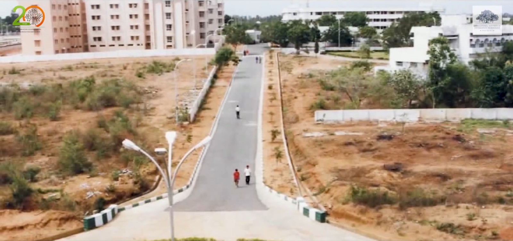
The road to OBH in the early years. Look how empty the land is.
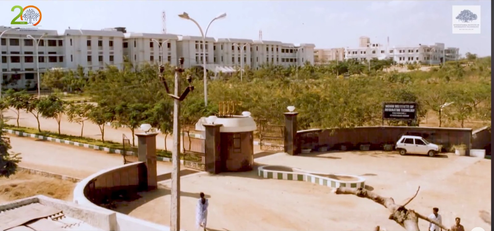
The early main gate. The sign says "Indian Institute of Information Technology". Today the I stands for International.
The guest house on bare red soil, with newly planted trees.
A village with forest-like land. Bullock carts on the path. Bears, pigs and monkeys strayed in. Mr. Gopi
One district road from Mehdipatnam was the only way in. Prof. K. S. Rajan
6
companies at Cyber Towers in 1998.
~1,000
in the IT corridor by 2007-08.Rajan
Sources: interviews with Mr. Gopi and Prof. K. S. Rajan (2026); stills from IIIT's 20-year video (photos 01, 02, 04).
B1 · A4 · PAGE 4
Board 1 · Setting the scene
A college in borrowed buildings
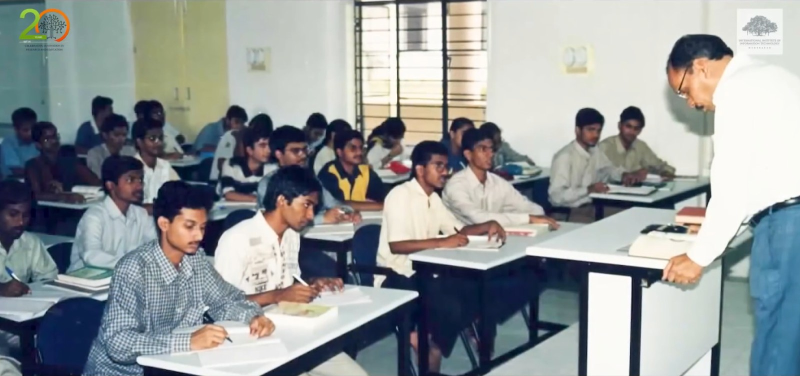
An early classroom.
1997-98 The state gave IIIT land and two government buildings it already had.
Vindhya was the old district collectorate. Nilgiri was the old district court. Gopi
In 1998 only Nilgiri's first two floors were in use: classrooms, labs, offices and exam halls. Prof. P. J. Narayanan
The one big lecture hall was SH-1 in Vindhya. PJN
A campus building in the prospectus, around 2001.
Memories differ: SLN Shastry remembers Nilgiri as an unfinished government building that was lent for classrooms and labs.
Sources: interviews with Mr. Gopi, Prof. P. J. Narayanan and SLN Shastry (2026); IIIT prospectus (c.2001); still from IIIT's 20-year video (photo 03).
B1 · A4 · PAGE 5
Board 1 · Setting the scene
A diploma on trust
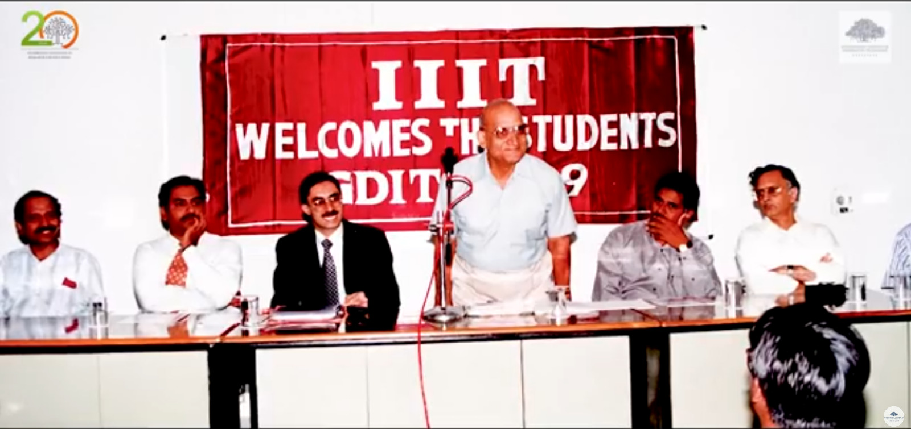
Inauguration of the first batch of GDIT students.
49
of 50 seats filled in the first batch, 2 Sep 1998. Gopi
IIIT wasn't a university yet, so it couldn't promise a degree. They signed up for a Graduate Diploma in IT (GDIT). PJN
Student emails ended in @gdit.iiit.net. Faculty had @iiit.net. PJN
2001 IIIT became a deemed university. Degrees at last.
Students listen to a panel, probably at the same event.
Sources: interviews with Mr. Gopi and Prof. P. J. Narayanan (2026); IIIT prospectus (c.2001); stills from IIIT's 20-year video (photos 07, 08).
B1 · A3 · PAGE 6
Board 1 · Setting the scene
Where did the first students sleep?
1998The District Collector's bungalow and three flats. PJN
1999A whole batch on two-tier bunk beds inside Vindhya, army style. PJN
2000Palash, Parijat, then Kadamb open. The bunks come down. PJN
c.2001Every student gets a single room. prospectus
NowTriple sharing. Visiting interns six to a room in the holidays. Sridhar Kora
The prospectus, around 2001: "All students are provided with single room accommodation."
The bungalow stood where the New Academic Block is going up now. PJN
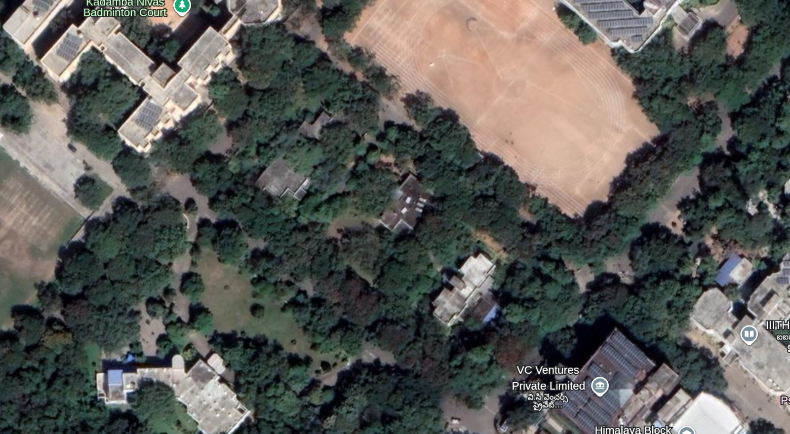
Before: the NAB site before building work, from above.
Later: the same spot in the latest satellite image we have.
Memories differ: SLN Shastry says boys stayed in Vindhya and girls in the Judge's Quarters at first.
Sources: interviews with Prof. P. J. Narayanan, SLN Shastry and Sridhar Kora (2026); IIIT prospectus (c.2001); satellite images (photos 09, 14).
B2 LEFT · A4 · PAGE 7
Board 2 · The IIIT Way
Himalaya: one loan, four blocks
22 cr
loan to build it. 10 years to pay back. Paid off in 6.PJN
The blocks arrived as bare shells. Each one was fitted out differently:
Block CIIIT's own moneyLecture halls and the exam centre.
Block ATalentSprintFitted out with TalentSprint. IIIT bought it out in 2018. Admin today.
Kohli Research BlockTCSBuilt with TCS. Research.
Block DT-Hub, 2015-2022The state's startup incubator. Back to IIIT in 2022: research labs now.
Only Block C was fitted out with IIIT's own money.
Himalaya stands on the old cricket ground, where faculty and students played together. Prabhakar M
The boxes show who paid, not where each block stands.
Sources: interviews with Prof. P. J. Narayanan and Prabhakar M (2026); Telangana Today (2022) and Wikipedia: T-Hub.
B2 MIDDLE · A3 · PAGE 8
Board 2 · The IIIT Way
Borrow, share, take back, build your own
Borrow1998
IIIT started in government buildings lent by the state: Vindhya and Nilgiri.
The campus in the prospectus, around 2001.
Share1998-2007
Six company schools ran inside Vindhya. The 2002 campus plan calls it the "Corporate Schools" building.
IBM, Oracle, Motorola and Cisco labs.
The list in the prospectus.
Take back
Then IIIT took its space back, one building at a time.
2007Vindhya, from the company schools
2018Himalaya Block A, from TalentSprint
2022Himalaya Block D, from T-Hub
Build your own
Himalaya, on its own loan. Its own servers in Nilgiri, still running. Its own office system, IMS (2017).
22 croreHimalaya loan, paid off in 6 years
1998first server room, Nilgiri
2017IMS
Landlord too
IIIT also rented out its own space: 67,118 sq ft to RGUKT, TalentSprint, SBH and others.
"Leased Spaces", from an undated floor-space table.
Sources: interviews with Prof. P. J. Narayanan, Prabhakar M and Prof. K. S. Rajan (2026); IIIT prospectus (c.2001); campus layout plan (2002); lab floor plans and floor-space tables (undated); Telangana Today (2022); team photos (19).
B2 RIGHT · A4 · PAGE 9
Board 2 · A branch that was cut
Why does a computer college have a concrete mixer?
An old concrete mixer in the abandoned civil engineering department, on our campus.
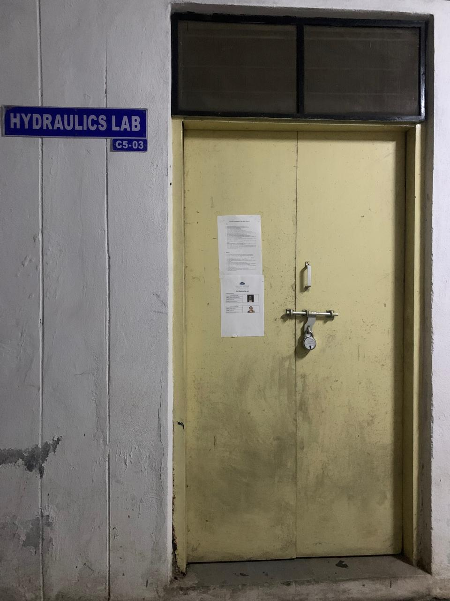
Hydraulics Lab
Soil Mechanics Lab
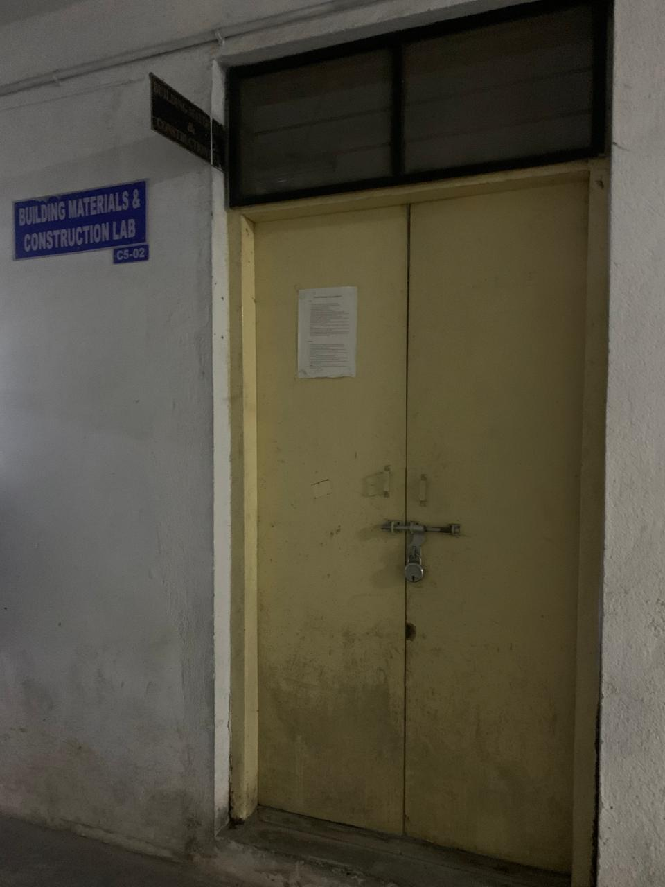
Building Materials Lab
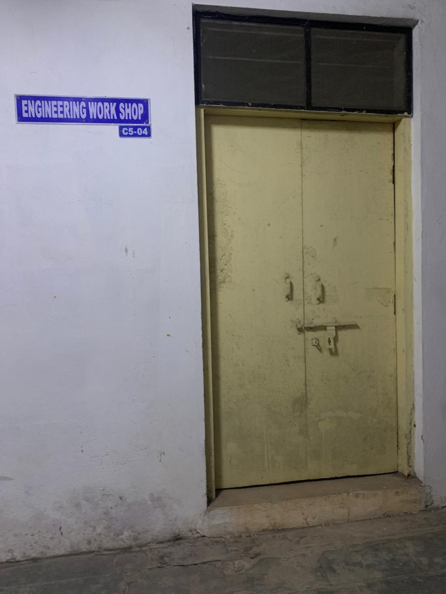
Engineering Workshop
Four labs. Every door padlocked.
IIIT today teaches CS and ECE, and does research. So who used these labs?
Sources: team photos from the abandoned civil engineering department (photos 39, 41, 42, 43, 46).
B2 RIGHT · A4 · PAGE 10
Board 2 · A branch that was cut
The paper trail
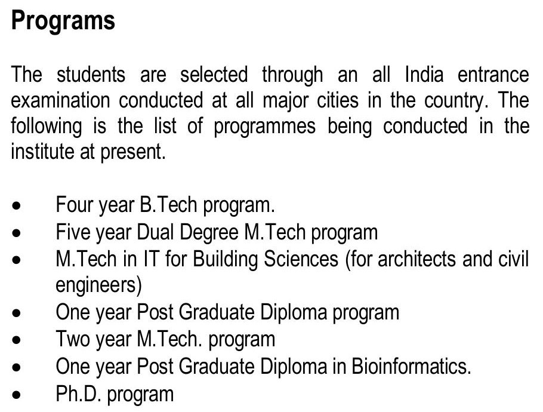
Prospectus, around 2001: an M.Tech in IT for Building Sciences, "for architects and civil engineers".
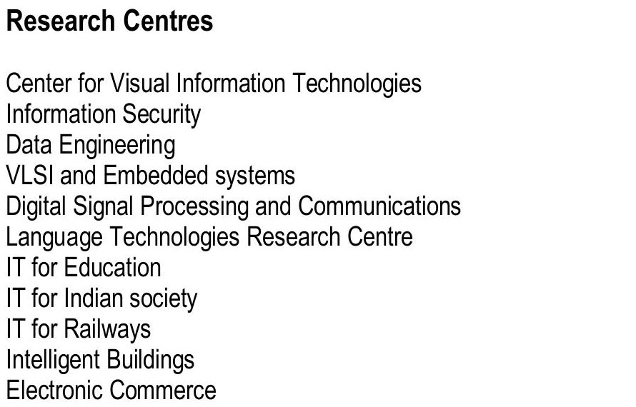
Same prospectus: a research centre for Intelligent Buildings.
A floor plan of Vindhya (undated): EERC, with a CASE Lab, a Material Testing Lab and a models display hall.
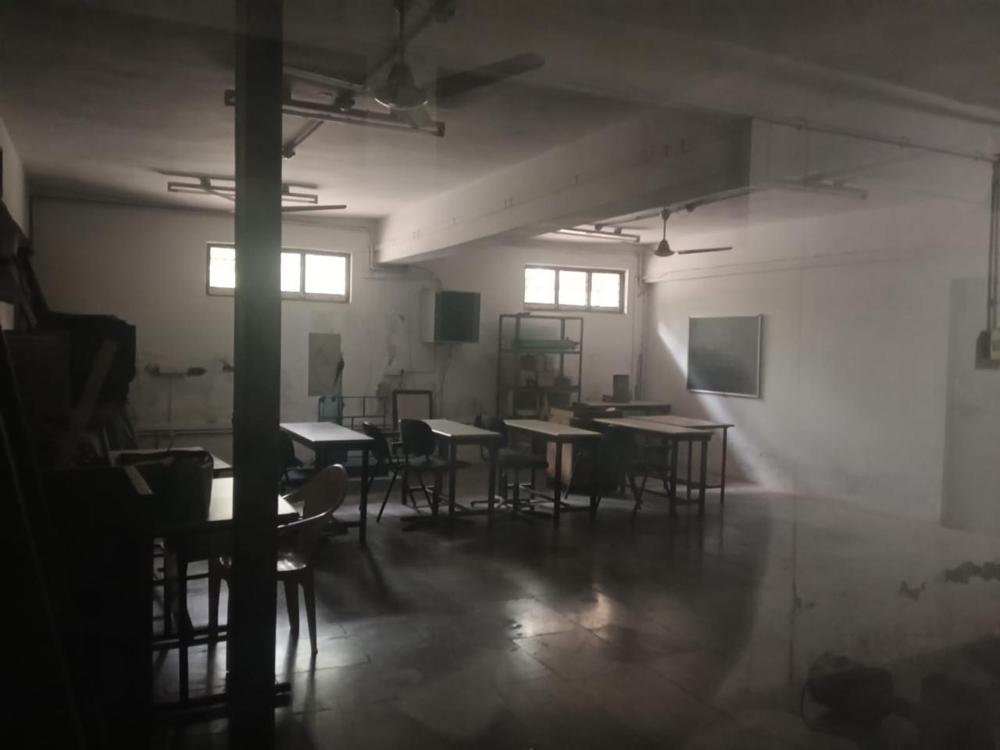
A lab, seen through the glass.
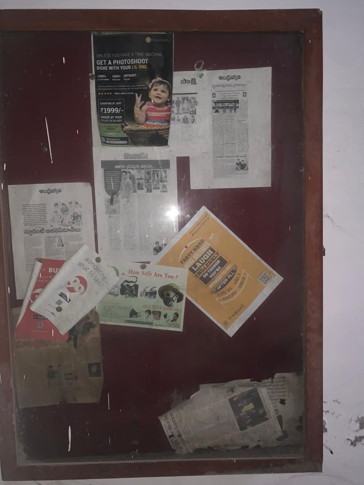
Still pinned up: old Telugu newspaper clippings.
When did it start? When did it close? We couldn't find out. Do you know? Tell us.
Sources: IIIT prospectus (c.2001); lab floor plans and floor-space tables (undated); team photos (40, 47).
B2 · A4 (OR CUT INTO 2 A5) · PAGE 11
Board 2 · Fun facts
Did you know?
Look down
The black granite floor in Vindhya A1 and B2 was put in by Motorola's company school. It's still there. PJN
Add this morning's granite photoCheck the spot: our source says A1 and B2. Is that near CSTAR?
First online
When COVID shut the campus, classes and exams moved to CodeTantra. Sridhar Kora says IIIT was the first institution in Hyderabad to go fully online.
One person told us this. If you know otherwise, tell us.
Sources: interviews with Prof. P. J. Narayanan and Sridhar Kora (2026).
B3 LEFT · A4 · PAGE 12
DRAFT: NEEDS THE TEAM'S INFO
Board 3 · Institutional changes
How did attendance work?
Then
The team is sending thisHow attendance used to work, who told us, and a photo of an old register if there is one.
Now
Biometric
Attendance in every class is taken with a biometric system.
Add a photo of the biometric machine
Sources:to add: who told us how it used to work, and the team's own experience for "now".
B3 LEFT · A4 · PAGE 13
Board 3 · Institutional changes
From paper files to one system
BeforeAll office work on paper, in government-style cloth and card file folders. Rajan
2016Prabhakar starts digitising hostel registers, reports, and electricity and water bills. Prabhakar M
2017IMS, the institute management system. Hostel room allocation and room shifting go first. Prabhakar M
ThenOffice work moves over one process at a time. Rajan
TodayMost paperwork goes through IMS. Some records stay on paper, because audit rules need hard copies. Rajan
Optional: photo of an old file folderRajan showed us these folders.
Optional: an IMS screenshotHide names and roll numbers.
Sources: interviews with Prof. K. S. Rajan and Prabhakar M (2026).
B3 MIDDLE · A3 (SIZE NOT FIXED) · PAGE 14
Board 3 · Institutional changes
Rooms that moved
Most rooms on campus have had more than one home. Find them on the map on the screen.
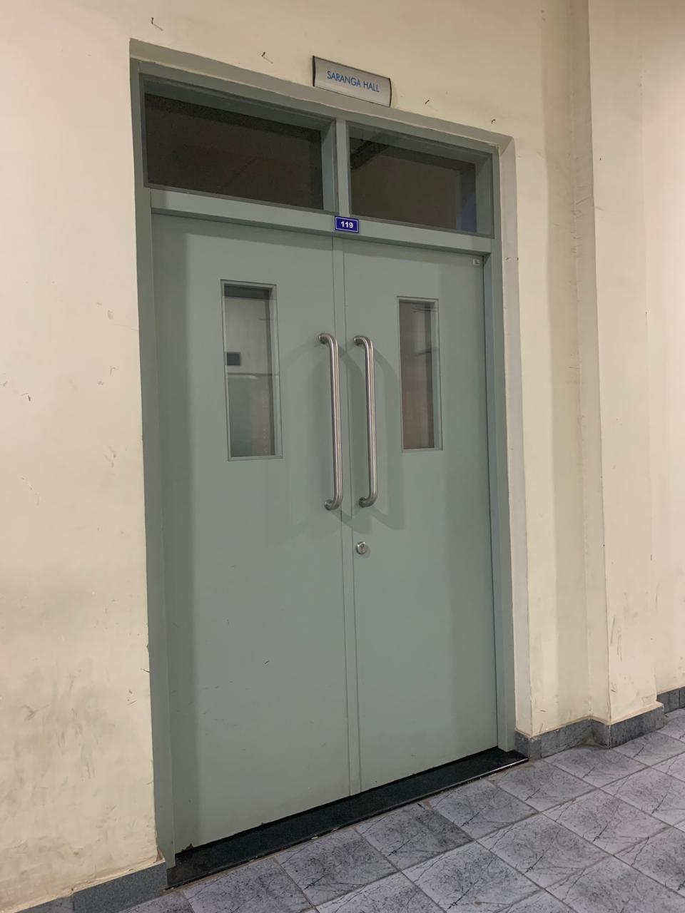
Saranga Hall, the first library.
The guest house: its old sign says "Mess & Lounge".
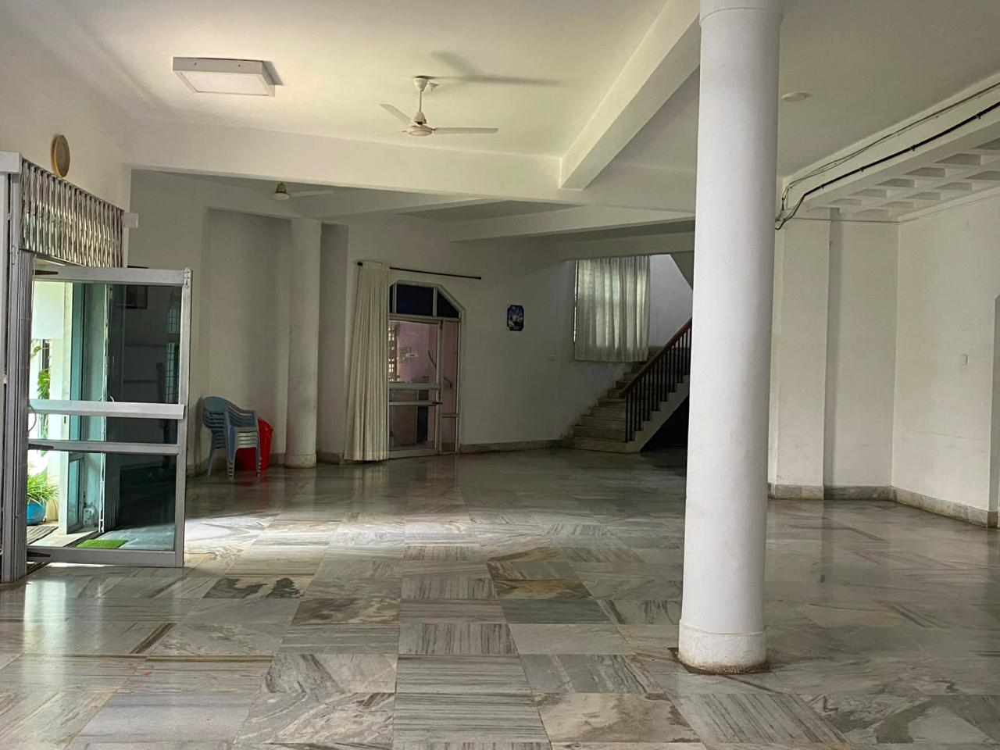
The lobby today is where the mess was.
The library
Nilgiri 119, now Saranga Hall1998→Vindhya A62001→plus the upper floor2016→New Academic Blocknext
Where you eat
the guest house1998→hostel messes1999-2001→four messes2005
Nilgiri1998, still running→Vindhya IT wingmoving now
The cricket ground
faculty vs students cricket→the Himalaya complex
Next, the New Academic Block takes the library and the big lecture hall.
Sources: interviews with G. Muralidhar, Mr. Gopi, Prof. P. J. Narayanan and Prabhakar M (2026); Ping! magazine, "Echoes: The Library" (c.2016); Telangana Today (2022); team photos (04, 30, 37).
B3 RIGHT · A4 · PAGE 15
Board 3 · HISTREE
Even the trees were moved here
Road widening in front of the campus threatened four banyans. SLN Shastry got them moved instead of cut down. SLN Shastry
Navjeevan, moved three times
Jagruthi
one in the Judge's Quarters area
one near Buddha Nivas
Navjeevan's three stops
OBH in the early years, with a young banyan.
Add: Navjeevan at OBH todayThis morning's photo.
Sources: interview with SLN Shastry (2026); still from IIIT's 20-year video (photo 05). We don't know the year of the road widening yet.
B3 RIGHT · A4 (OPTIONAL) · PAGE 16
Board 3 · HISTREE
Jagruthi, and Jagruti
The tree
Jagruthi
One of the four banyans SLN Shastry saved.
=
The mascot
Jagruti
IIIT's mascot, "the banyan tree", on Wikipedia.
Same name, one letter apart. Was the tree named after the mascot, or the other way round? We don't know yet.
Add: Jagruthi today
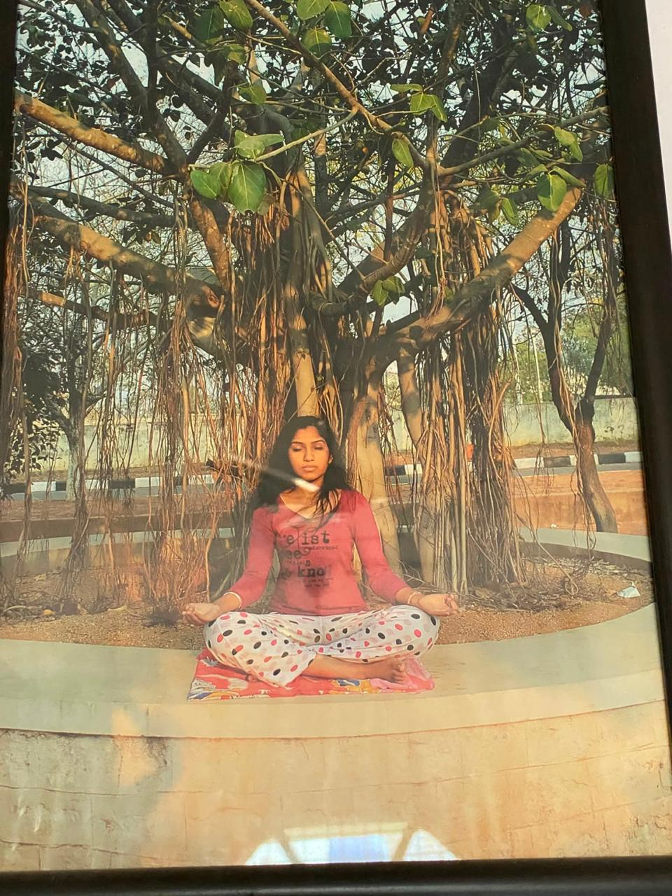
A framed photo of someone meditating under a campus banyan.
A neem planted by the PGDIT-2002 students.
IIIT's logo is a banyan. It put down its own roots, and so did its trees.
Sources: interview with SLN Shastry (2026); Wikipedia: IIIT Hyderabad (infobox: "Mascot: Jagruti - The Banyan Tree"); team photos (26, 49).